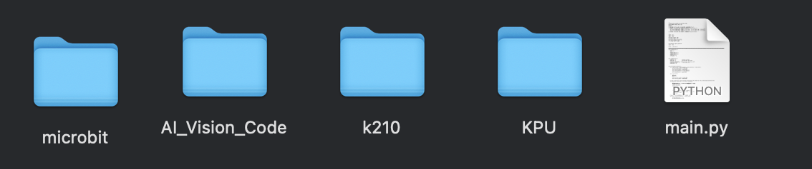
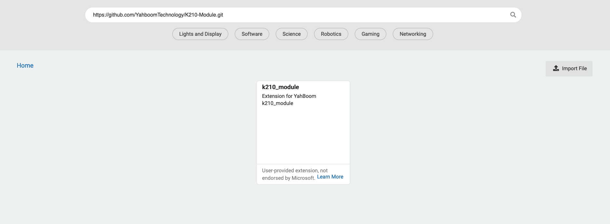

Activity 1: Handwritten Digit Recognition
For this activity, we will use a pre-built AI to recognize handwritten digits from the MNIST database, a classic dataset in computer vision. MNIST is a database of handwritten numbers from 0-9, thus AI trained on this data can only recognize digits from 0-9.

Steps for Activity
- Find the SD card reader and SD card in your robot kit. It should look something like this:
 Insert this into your computer.
Insert this into your computer. - Download this zip files onto the device (usually called NONAME) and unzip the files. It should look like 
- Copy the file
2.9_3.8_mnist.pyfrom theKPU directoryto the root and name itmain.py. You may need to delete the existingmain.pyfirst. - Safely eject the USB device and insert the SD card into the camera module. We are now ready to code a bit!
- Go to makecode and start a new project, we recommend calling it MNIST. Click on the extensions panel on the left side and add this url: https://github.com/YahboomTechnology/K210-Module.git. The result should yield the k210_module. Now let's try to recreate this code!  The green blocks can be found in the k210_module, feel free to make any other adjustments you want (like smiley faces on a specific number).
- Once you're done coding, download it onto the micro:bit and safely disconnect your micro:bit from the computer.
Things to Try
- Remember we can only recognize numbers 0-9, first try writing a few numbers on a nice clear piece of paper. Can the model recognize them (the number will be shown in the upper left corner)?
- What if the background of what the camera sees is cluttered?
- What if you make numbers greater than 9?
- Draw a bunch of numbers and keep track of how many your robot AI gets right and how many it gets wrong -- this will tell us how accurate we are!